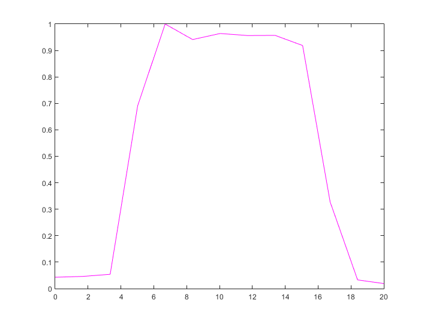

Contents
- This code was created for the workshop "Separating alpha sources"
- Add EEG lab to your path
- Plotting channel power spectra
- Remove eye-blink and other artifactual ICs (e.g. muscle artifacts):
- Filter the data 5 to 15 Hz
- Perform ICA only on the pre-stimulus data -1000 - 0 ms
- Plot alpha IC topographies and spectra
- Creating Head Model
- Dipole fitting
- Visualizing dipoles
- Find parietal and occipital dipoles based on anatomical coordinates
- Find occipital & parietal ICs - sorting method using distance and RV info
- Exploring DataSet 2 - RUN all the steps above
- Apply ICA weights to unfiltetered data:
- END
This code was created for the workshop "Separating alpha sources"
at CuttingEEG'18, Paris
% Created by: Rasa Gulbinaite (rasagulbinaite.com)
Add EEG lab to your path
eeglabfolder = uigetdir([],'search for EEGLAB folder'); % addpath(genpath(eeglabfolder)) % load EEG data load('M:\CUTTING_EEG\Dataset1.mat') EEG1_original = EEG;
Plotting channel power spectra
% Parameters for FFT time4fft = [-1000 0]; % time window for FFT tidx = dsearchn(EEG.times',time4fft'); % time window in indices Nsig = length(tidx(1):tidx(2)); fft_resolution = 0.1; % frequency resolution of the spectra Nfft = ceil( EEG.srate/fft_resolution ); % length of the FFT result frequencies = EEG.srate/2*linspace(0,1,Nfft/2+1); % frequencies % Alpha-band or where we will look for individual alpha peak frequencies alphafreqs = [7 13]; alphafreqidx = dsearchn(frequencies',alphafreqs'); % Define variables to store the results alphapeakfreq = zeros(1,EEG.nbchan); alphapeakval = zeros(1,EEG.nbchan); % The actual FFT data4fft = EEG.data(:,tidx(1):tidx(2),:) ; % select only part inter-trial interval data fftresult = fft(data4fft,Nfft,2)/Nsig; fftpower = mean(abs(fftresult(:,floor(1:Nfft/2+1),:)).^2,3); % compute power % Find alpha peaks in power spectra of each channel for chani = 1:EEG.nbchan [alphapeakval(chani),alphapeakindex] = max(fftpower(chani,alphafreqidx(1):alphafreqidx(2))); alphapeakfreq(chani) = frequencies(alphapeakindex+alphafreqidx(1)-1); end % PLOT chans2plot = {'Oz'}; chans2plot_idx = find(strcmpi(chans2plot,{EEG.chanlocs.labels})); figure(1), clf, set(gcf,'name','Channel spectra') set(gcf,'color','w') subplot(121) plot(frequencies,fftpower); hold on h1 = plot(frequencies,fftpower(chans2plot_idx,:),'b-','Linewidth', 4,'MarkerFaceColor','w'); set(gca,'xlim',[2 14],'ylim',[0 40],'box','off') axis square legend(h1,'Oz electrode') title('Power spectra across channels') subplot(122) plot(alphapeakfreq,alphapeakval,'b*') h2 = histc(alphapeakfreq,median(alphapeakfreq)-1:fft_resolution:median(alphapeakfreq)+1); hold on plot(median(alphapeakfreq)-1:fft_resolution:median(alphapeakfreq)+1,h2,'ro-') set(gca,'xlim',[median(alphapeakfreq)-1 median(alphapeakfreq)+1],'box','off') title('Peak frequency distribution across channels') axis square
Remove eye-blink and other artifactual ICs (e.g. muscle artifacts):
can be identified by visual inspection (topography and power spectra) or specific toolboxes e.g. SASICA by Maximilian Chaumon https://github.com/dnacombo/SASICA/
EEG.data = double(EEG.data); EEG.icaact = eeg_getica(EEG); % PLOT figure(2), set(gcf,'name', 'ICs 1-6') for compi = 1:6 subplot(1,6,compi) topoplot(squeeze(EEG.icawinv(:,compi)),EEG.chanlocs,'plotrad',.75,'numcontour',0,'electrodes','off'); title({['IC: ' num2str(compi)]}) end set(gcf,'color','w') % Remove blink components ICs2remove = [1 2]; % dataset2 ICs2remove = 1; EEG = pop_subcomp(EEG,ICs2remove); % clear ICA information - we will run ICA again on filtered data EEG.icawinv = []; EEG.icasphere = []; EEG.icaweights = []; EEG.icachansind = [];
Recomputing ICA activations Computing projection ....
Filter the data 5 to 15 Hz
% Filter parameters freq_band = [5 15]; % in hz trans_width = .15; idealresponse = [ 0 0 1 1 0 0 ]; filtfreqbounds = [ 0 (1-trans_width)*freq_band(1) freq_band(1) freq_band(2) freq_band(2)*(1+trans_width) EEG.srate/2 ]/(EEG.srate/2); filt_order = round(3*(EEG.srate/freq_band(1))); % try changing 3 to 10, and plotting filter kernel filterweights = firls(filt_order,filtfreqbounds,idealresponse); % PLOT filter kernel figure(3), clf, set(gcf,'name','Filter kernel') nyquist = EEG.srate/2; fft_filtkern = abs(fft(filterweights)); fft_filtkern = fft_filtkern./max(fft_filtkern); % normalized to 1.0 for visual comparison ease hz_filtkern = linspace(0,nyquist,filt_order/2+1); plot(hz_filtkern,fft_filtkern(1:ceil(length(fft_filtkern)/2)),'m-') set(gca,'xlim',[0 20]) % Filter the data 5-15 Hz filterdata = zeros(EEG.nbchan,EEG.pnts,EEG.trials); for chani=1:EEG.nbchan % disp(chani); filterdata(chani,:,:) = reshape( filtfilt(filterweights,1,double(reshape(EEG.data(chani,:,:),1,EEG.pnts*EEG.trials))) ,EEG.pnts,EEG.trials); end % Alternative filtering using EEGLAB % filterdata = pop_eegfiltnew( EEG, 5, 15,[],0); % band-pass filter % Replace EEG.data with filtered data EEG.data = filterdata; % save results % EEG.icaact = []; % EEG.data = single(EEG.data); % save('...\Dataset1_filtered.mat','EEG')
Perform ICA only on the pre-stimulus data -1000 - 0 ms
time4ica = [-1 0]; % in seconds EEG = pop_select(EEG, 'time', time4ica); % trim the data % Run ICA on pre-stimulus aka trimmed data ncomponents = 20; EEG.data = double(EEG.data); EEG = pop_runica(EEG,'icatype','jader','dataset',1,'options',{ncomponents}); % save results % EEG.icaact = []; % EEG.data = single(EEG.data); % save('...\Dataset1_filtered_withICA.mat','EEG')
Epoching... Attempting to convert data matrix to double precision for more accurate ICA results. jade -> Looking for 20 sources jade -> Removing the mean value jade -> Whitening the data jade -> Estimating cumulant matrices jade -> Initialization of the diagonalization jade -> Contrast optimization by joint diagonalization jade -> Sweep #0 jade -> Sweep #1 jade -> Sweep #2 jade -> Sweep #3 jade -> Sweep #4 jade -> Sweep #5 jade -> Sweep #6 jade -> Sweep #7 jade -> Sweep #8 jade -> Sweep #9 jade -> Sweep #10 jade -> Sweep #11 jade -> Sweep #12 jade -> Sweep #13 jade -> Sweep #14 jade -> Sweep #15 jade -> Sweep #16 jade -> Sweep #17 jade -> Sweep #18 jade -> Total of 2361 Givens rotations jade -> Sorting the components jade -> Fixing the signs Scaling components to RMS microvolt eeg_checkset: recomputing the ICA activation matrix ...
Plot alpha IC topographies and spectra
% Parameters for FFT - same as before except Nsig = EEG.pnts; % Define variables to store the results fftpower = zeros(ncomponents,length(frequencies)); alphapeakfreq = zeros(1,ncomponents); alphapeakval = zeros(1,ncomponents); % Get ICA activation EEG.icaact = eeg_getica(EEG); % The actual FFT loop for compi = 1:ncomponents % get data data_signal = squeeze(EEG.icaact(compi,:,:)) ; % compute power fftresult = fft(data_signal,Nfft)/Nsig; fftpower(compi,:) = mean(abs(fftresult(floor(1:Nfft/2+1),:)).^2,2); [alphapeakval(compi),alphapeakindex] = max(fftpower(compi,alphafreqidx(1):alphafreqidx(2))); alphapeakfreq(compi) = frequencies(alphapeakindex+alphafreqidx(1)-1); end % PLOT: component topographies (ICA weights) and component power spectra figure(4), clf, set(gcf,'name', 'ICs 1-6') for compi = 1:6 subplot(2,6,compi) topoplot(squeeze(EEG.icawinv(:,compi)),EEG.chanlocs,'plotrad',.75,'numcontour',0,'electrodes','off'); % Print dipole location above topoplot title({['IC: ' num2str(compi)]}) ax(compi+6) = subplot(2,6,compi+6); plot(frequencies,squeeze(fftpower(compi,:)) ,'b','Linewidth',1.5); hold on plot(alphapeakfreq(compi),alphapeakval(compi),'*k'); set(gca,'xlim',[5 15]); title(['IC: ' num2str(compi) ', ' num2str(alphapeakfreq(compi)) ' Hz' ]); end set(gcf,'color','w') figure(5),clf, set(gcf,'name', 'ICs 7-12') for compi = 1:6 subplot(2,6,compi) topoplot(squeeze(EEG.icawinv(:,compi+6)),EEG.chanlocs,'plotrad',.75,'numcontour',0,'electrodes','off'); % Print dipole location above topoplot title({['IC: ' num2str(compi+6)]}) ax(compi+6) = subplot(2,6,compi+6); plot(frequencies,squeeze(fftpower(compi+6,:)) ,'b','Linewidth',1.5); hold on plot(alphapeakfreq(compi+6),alphapeakval(compi+6),'*k'); set(gca,'xlim',[5 15]); title(['IC: ' num2str(compi+6) ', ' num2str(alphapeakfreq(compi+6)) ' Hz' ]); end set(gcf,'color','w')
Creating Head Model
Done through EEGLab GUI
Dipole fitting
% Load headmodel load('M:\CUTTING_EEG\dipfitBEM.mat') % Use head model EEG.dipfit = dipfitBEM; % Perform dipole fitting EEGsingledipole = pop_multifit(EEG, [],'threshold',100,'rmout','on','dipoles',1); EEG.dipfit = EEGsingledipole.dipfit; % save % EEG.icaact = []; % EEG.data = single(EEG.data); % save('...\Dataset1_filtered_withICA_dipfit.mat','EEG')
Scanning dipolar grid to find acceptable starting positions... Transforming electrode coordinates to match head model
Visualizing dipoles
figure(6) pop_dipplot(EEG, [], 'mri',[ eeglabfolder '\plugins\dipfit2.3\standard_BEM\standard_mri.mat'],'normlen', 'on','projlines','on');
Find parietal and occipital dipoles based on anatomical coordinates
% Coordinates from Haegens et al., 2014 NeuroImage rois = [ -20 -90 0; 20 -90 0; -20 -70 50; 20 -70 50]; % occ R ; occ L; par R; par L % Reject overall poor dipole fits: dipoles for which rv > 5% EEG.dipfit.model = dipfit_reject(EEG.dipfit.model, 5/100); % Compute euclidian distance (i.e. 3D distance) to all ROIs eucdist = zeros(4,numel(EEG.dipfit.model)); for iroi = 1:size(rois,1) for di = 1:numel(EEG.dipfit.model) if EEG.dipfit.model(di).rv < 1 eucdist(iroi,di)=sqrt( (EEG.dipfit.model(di).posxyz(1) - rois(iroi,1))^2 + (EEG.dipfit.model(di).posxyz(2) - rois(iroi,2))^2 + (EEG.dipfit.model(di).posxyz(3) - rois(iroi,3))^2 ); else eucdist(iroi,di) = NaN; end end end
Find occipital & parietal ICs - sorting method using distance and RV info
% OCCIPITAL dipoleinfo = zeros(ncomponents*2,4); %(1) eucldist (2) RV (3) which ROI (4) which IC dipoleinfo(:,1) = [eucdist(1,:) eucdist(2,:) ]; dipoleinfo(:,2) = repmat([EEG.dipfit.model.rv]',2,1 ); dipoleinfo(:,3) = ceil(linspace(eps,2,40)'); dipoleinfo(:,4) = repmat((1:ncomponents)',2,1); dipoleinfo_sorted = sortrows(dipoleinfo,[1 2]); % first sorting by distance then by RV % dipoleinfo_sorted = sortrows(dipoleinfo,[2 1]); % first sorting by RV, then by euclidian distance occIC = dipoleinfo_sorted(1,4); % PARIETAL dipoleinfo(:,1) = [eucdist(3,:) eucdist(4,:) ]; dipoleinfo_sorted = sortrows(dipoleinfo,[1 2]); % first sorting by distance then by RV % dipoleinfo_sorted = sortrows(dipoleinfo,[2 1]); % first sorting by RV, then by euclidian distance parIC = dipoleinfo_sorted(1,4); % if the same dipole was found as occ and par if occIC == parIC dipoleinfo(occIC,1) = NaN; dipoleinfo_sorted = sortrows(dipoleinfo,[1 2]); parIC = dipoleinfo_sorted(1,4); end % PLOT comps2plot = [occIC parIC]; titles = {'occipital' 'parietal'}; figure(7), clf, set(gcf,'name', 'Alpha sources') for compi = 1:length(comps2plot) subplot(2,2,compi) topoplot(squeeze(EEG.icawinv(:,comps2plot(compi))),EEG.chanlocs,'plotrad',.75,'numcontour',0,'electrodes','off'); title(titles{compi}) ax(compi+2) = subplot(2,2,compi+2); plot(frequencies,squeeze(fftpower(comps2plot(compi),:)) ,'b','Linewidth',1.5); hold on plot(alphapeakfreq(comps2plot(compi)),alphapeakval(comps2plot(compi)),'*k'); set(gca,'xlim',[5 15]); axis square title(['IC: ' num2str(comps2plot(compi)) ', ' num2str(alphapeakfreq(comps2plot(compi))) ' Hz' ]); end set(gcf,'color','w')
Warning: When plotting pvalues in totoplot, use option 'conv' to minimize extrapolation effects Warning: When plotting pvalues in totoplot, use option 'conv' to minimize extrapolation effects
Exploring DataSet 2 - RUN all the steps above
load EEG data load('...\Dataset2.mat')
Apply ICA weights to unfiltetered data:
This allows to retain broadband spectral content of the EEG signal
% copy the weights from filtered to unfiltered dataset EEG1_original.icawinv = EEG.icawinv; EEG1_original.icasphere = EEG.icasphere; EEG1_original.icaweights = EEG.icaweights; EEG1_original.icachansind = EEG.icachansind; % Get time series of ICs - all the subsequent analyses (power, phase, etc.) can be done one those EEG1_original.icaact = eeg_getica(EEG1_original);
Recomputing ICA activations